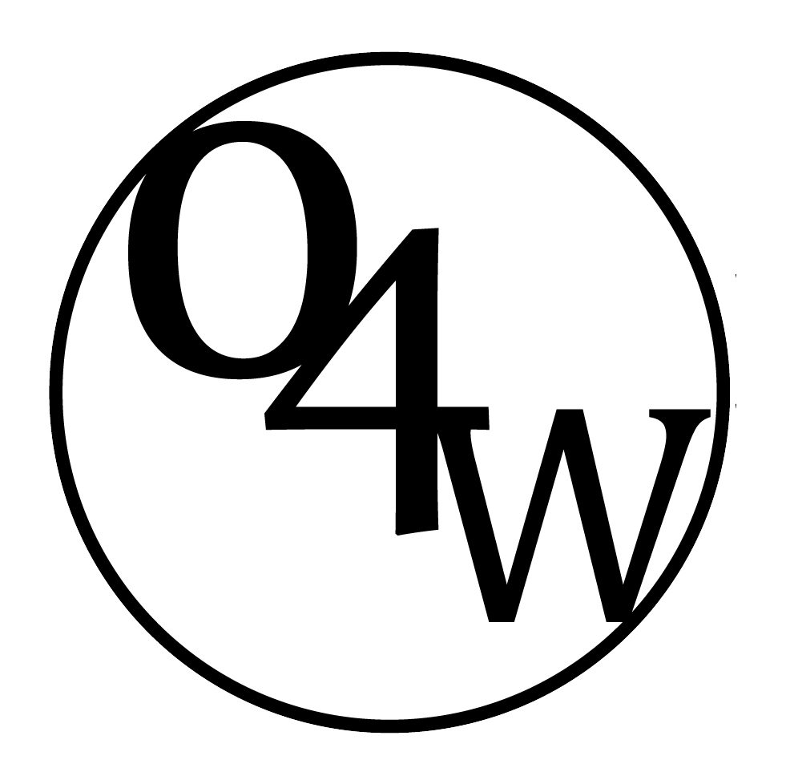
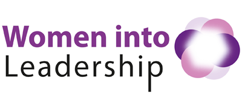
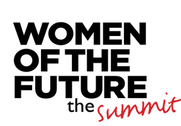
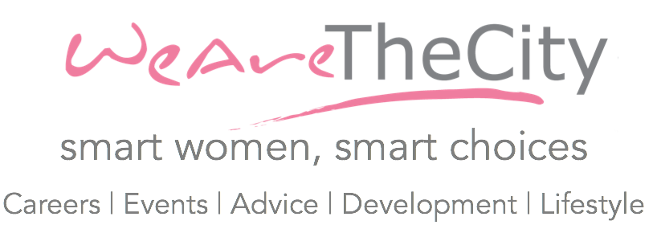

Now you've gotten your dream job! Time to CELEBRATE!
What's next? Sometimes even dream jobs aren't as dreamy as they initially seem, which is why we at Project Athena believes in the importance of a good support network! Of course, even if everything is hunky dory, having a group of people who are in a similar business area, who are able to provide advice, motivation and support is still amazing!
Most companies have women-based networks in recent years, but if there isn't such a thing where you're working, you could potentially pioneer one yourself! Alternatively, we have here some links (London-specific for now) that connects you to other women around London. This list is not exhaustive, and we would like to encourage you to take the initiative to reach out to people yourself, as traditional in-person relationship has a more personal touch than through remote networks. Who knows, you might even find a mentor with similar ideals and values that you possess! ;)
Here we have some links to networks you can get involved in! (Quite a lot of them are London based, so please bear with us as we update this list)Click on each image to find out more of our Partners to get started:
|  |
 |
 |
 |
| Opportunities 4 Women |
Women Into Leadership |
Women of the Future |
We Are the City |